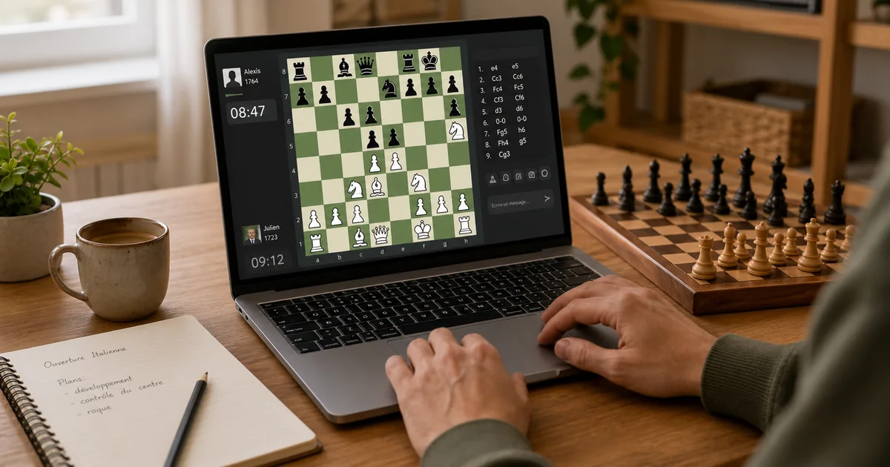

Au sommaire
Jouer votre première partie en ligne en 7 étapes
1. Vérifiez que vous connaissez les règles essentielles
Vous devez savoir déplacer les pièces, reconnaître un échec et comprendre le but : mater le roi adverse. Le site place les pièces automatiquement et interdit les coups illégaux, mais il n'explique pas toujours pourquoi un coup est impossible. Si le roque, le pat ou la prise en passant vous semblent encore mystérieux, commencez par notre guide illustré des règles des échecs.
2. Choisissez votre appareil
Le téléphone suffit pour jouer, mais l'ordinateur est plus confortable pour apprendre : l'échiquier est plus grand, la liste des coups reste visible et l'analyse est plus lisible. Sur mobile, activez les notifications uniquement si vous jouez des parties par correspondance ; elles sont inutiles pour les parties en direct.
3. Créez un compte gratuit
Un compte conserve vos parties, calcule un classement et vous propose progressivement des adversaires de force comparable. Choisissez un pseudonyme qui ne révèle pas le nom complet d'un enfant. Vérifiez aussi les réglages de confidentialité et de discussion avant sa première partie.
4. Choisissez « jouer en ligne », puis une cadence
Pour débuter, sélectionnez 15+10 ou 10+5. Le premier nombre est votre temps de départ ; le second est le nombre de secondes ajoutées après chaque coup. L'incrément évite de perdre une position gagnante uniquement parce qu'il ne reste que deux secondes.
5. Affrontez un joueur, un ami ou un ordinateur
- Un joueur aléatoire : le meilleur choix pour obtenir rapidement des parties équilibrées.
- Un ami : créez un défi, réglez la cadence et partagez le lien.
- Un bot : rassurant pour apprendre l'interface, mais moins formateur à long terme qu'un humain.
6. Jouez sans aide extérieure
Pendant une partie en direct, n'utilisez ni moteur d'analyse, ni livre, ni conseil d'une autre personne. Réfléchissez avec votre propre tête : c'est la condition du fair-play et, surtout, de votre progression. Avant chaque coup, posez-vous trois questions : que menace mon adversaire, mon roi est-il en sécurité, une de mes pièces est-elle attaquée ?
7. Analysez avant de relancer une partie
Rejouez d'abord les coups sans ordinateur et repérez le moment où vous avez commencé à hésiter. Ensuite seulement, lancez l'analyse automatique. L'objectif n'est pas de collectionner les « imprécisions », mais de comprendre une erreur récurrente à corriger lors de la prochaine partie.
Chess.com : l'expérience la plus guidée
Chess.com regroupe le jeu en direct, les parties entre amis, des adversaires informatiques, des exercices, des leçons et le suivi d'événements. Son principal atout est de rendre la première semaine très simple : gros boutons, objectifs visibles et explications accessibles.
Les avantages de Chess.com
- Prise en main rassurante : l'interface guide bien le nouveau joueur.
- Bots variés : pratiques pour apprendre sans stress et tester une ouverture.
- Parcours pédagogique : les leçons pour apprendre à jouer abordent les pièces, l'échec, le mat et les règles spéciales.
- Revue de partie lisible : les catégories de coups et les explications visuelles parlent bien aux débutants.
- Grande communauté : il est facile de trouver rapidement un adversaire, quelle que soit la cadence.
- Écosystème riche : actualités, vidéos, tournois et retransmissions sont réunis au même endroit.
Les inconvénients de Chess.com
- Modèle freemium : jouer est gratuit, mais certaines leçons, analyses détaillées et fonctions d'entraînement sont limitées selon la formule.
- Interface chargée : défis, séries quotidiennes et notifications peuvent encourager à cliquer plus qu'à réfléchir.
- Publicité en version gratuite : elle peut gêner la concentration selon le support et les réglages.
- Abonnement vite tentant : agréable si vous utilisez réellement les cours, moins utile si vous voulez seulement jouer et analyser simplement.
Lichess : gratuit, épuré et puissant
Lichess est un projet à but non lucratif financé par les dons. Sa promesse est nette : logiciel libre, aucune publicité et aucun pistage publicitaire. Le site paraît plus sobre, mais cache des outils remarquablement complets pour jouer, analyser et partager des positions.
Les avantages de Lichess
- Gratuit sans publicité : pas de formule premium qui bloque une catégorie d'outil.
- Open source : le code et le fonctionnement du projet sont publics.
- Interface rapide et légère : peu de distractions autour de l'échiquier.
- Excellents outils d'analyse : échiquier d'analyse, Stockfish, ouverture, études partageables et fonction « apprendre de ses erreurs ».
- Entraînement généreux : problèmes tactiques, Puzzle Streak, Puzzle Storm et leçons de base sont accessibles gratuitement.
- Formats nombreux : parties rapides ou par correspondance, tournois Arena et suisses, simultanées et variantes.
Petite nuance utile : « tout est gratuit » ne signifie pas « toutes les ressources serveur sont infinies ». La page officielle des fonctionnalités indique notamment une limite quotidienne pour certaines analyses serveur approfondies, identique pour les comptes ordinaires et les mécènes. L'analyse locale sur l'échiquier reste disponible.
Les inconvénients de Lichess
- Moins de mise en scène pédagogique : un débutant peut avoir besoin de chercher où se trouvent les études, l'analyse ou les réglages avancés.
- Explications plus techniques : le moteur montre d'excellents coups, mais les transforme moins souvent en phrases simples.
- Bots moins « personnifiés » : efficaces pour jouer, mais moins ludiques que les personnages proposés par Chess.com.
- Classement différent : un Elo Lichess ne se compare pas directement à un classement Chess.com ou FIDE.
Chess.com ou Lichess : le comparatif rapide
| Critère | Chess.com | Lichess |
|---|---|---|
| Jouer gratuitement | Oui | Oui |
| Publicité | Possible avec le compte gratuit | Aucune |
| Leçons guidées | Très accessibles, certaines limitées | Bases gratuites, moins scénarisées |
| Analyse | Très pédagogique, fonctions avancées selon la formule | Puissante et largement gratuite |
| Bots | Nombreux et ludiques | Plus sobres |
| Interface | Guidée, riche, parfois chargée | Rapide, épurée, parfois moins intuitive |
| Idéal pour | Débuter avec un parcours balisé | Jouer et travailler sans payer |
• Débutant absolu : commencez sur Chess.com si son parcours visuel vous motive.
• Budget zéro ou joueur autonome : choisissez Lichess.
• Vous hésitez : essayez les deux pendant une semaine, puis gardez celui qui vous donne envie d'analyser vos parties.
Ne choisissez pas selon le chiffre de votre classement : les deux plateformes utilisent des populations et des systèmes différents. Un 1500 sur l'une n'est pas automatiquement un 1500 sur l'autre.
Quelle cadence choisir quand on débute ?
- 15+10 — recommandée : assez de temps pour réfléchir et un incrément qui évite la panique finale.
- 10+5 — bon compromis : plus courte, mais encore exploitable pour apprendre.
- 30 minutes — excellent pour travailler : à choisir quand vous pouvez consacrer une heure entière à la partie et à son analyse.
- 3+0, 1+0 et autres cadences très rapides — à éviter au début : elles entraînent surtout les réflexes que vous possédez déjà, y compris les mauvais.
Une cadence s'écrit généralement temps initial + incrément. Ainsi, 10+5 signifie dix minutes au départ et cinq secondes ajoutées après chaque coup. Une partie peut durer plus de vingt minutes : ne la lancez pas dans le métro deux stations avant votre arrêt.
Vous jouez en ligne mais répétez les mêmes erreurs ?
En visio, nous partageons l'échiquier, analysons vos propres parties Chess.com ou Lichess et construisons un plan adapté à votre niveau.
Découvrir les cours en visioLa routine simple pour progresser en ligne
Le jeu en ligne devient vraiment formateur quand chaque partie produit une petite leçon. Voici une séance de 45 à 60 minutes que vous pouvez répéter deux ou trois fois par semaine :
- 5 minutes de tactique : résolvez trois problèmes lentement, sans deviner.
- Une partie en 15+10 : utilisez votre temps et notez mentalement les moments difficiles.
- 10 minutes d'analyse personnelle : rejouez la partie sans moteur et écrivez ce que vous auriez pu faire autrement.
- 5 minutes avec le moteur : vérifiez seulement les deux ou trois tournants importants.
- Une conclusion : formulez une règle concrète, par exemple « vérifier les pièces non protégées avant d'attaquer ».
Conservez la même cadence et une ouverture simple pendant plusieurs semaines. Notre article sur les meilleures ouvertures pour débutants vous aide à choisir un petit répertoire sans apprendre vingt variantes par cœur.
Les 6 erreurs à éviter en jouant en ligne
- Enchaîner après une défaite : faites une pause de cinq minutes si vous êtes énervé. Le « tilt » transforme souvent une défaite en série.
- Jouer uniquement contre des bots : ils sont utiles pour démarrer, mais les humains créent des problèmes plus réalistes.
- Abandonner trop vite : sous 1200, une position difficile peut encore basculer plusieurs fois.
- Laisser le temps s'écouler au lieu d'abandonner : cliquez sur abandonner si vous devez partir ; votre adversaire n'a pas à attendre.
- Répondre aux provocations : désactivez ou fermez le chat, puis utilisez les outils de signalement si nécessaire.
- Utiliser une aide pendant la partie : un moteur, une base d'ouvertures ou le conseil d'un ami faussent la partie et peuvent entraîner des sanctions.
Pour un enfant, privilégiez une session dans une pièce commune, vérifiez les paramètres sociaux et apprenez-lui à ne jamais partager d'informations personnelles. Le jeu doit rester un espace d'apprentissage, pas une messagerie.
Questions fréquentes
Faut-il installer une application ?
Non. Chess.com et Lichess fonctionnent dans un navigateur sur ordinateur ou mobile. Leurs applications sont pratiques sur téléphone, mais le site suffit pour commencer.
Peut-on jouer sans compte ?
Il est possible de lancer certaines parties comme invité, notamment sur Lichess. Créer un compte gratuit reste préférable pour retrouver vos parties, obtenir un classement stable et suivre vos progrès.
Le classement en ligne est-il un classement FIDE ?
Non. Chaque plateforme calcule son propre classement selon sa population et son système. Le classement FIDE provient de parties officielles jouées en tournoi homologué. Comparez votre évolution sur une même plateforme, pas les chiffres entre sites.
Quelle plateforme choisir pour jouer avec un ami ?
Les deux conviennent. Créez un défi privé, choisissez la même cadence — idéalement 15+10 — puis envoyez le lien. Prenez ensuite dix minutes pour revoir la partie ensemble.
Peut-on vraiment progresser uniquement en ligne ?
Oui, à condition d'alterner parties lentes, tactique et analyse. Jouer beaucoup sans revoir ses erreurs améliore surtout la vitesse ; travailler ses propres décisions améliore le niveau.
Transformez vos parties en ligne en vraies leçons
Je vous aide à comprendre vos erreurs, organiser votre entraînement et progresser avec un suivi humain. Le premier cours est offert, en visio ou à domicile à Paris et Versailles.
Réserver mon premier coursPour aller plus loin
Les règles, la tactique, les finales et une méthode complète pour commencer :
« Apprendre les Échecs » — le guide gratuit de 90 pages Envoyé immédiatement par email, avec exercices corrigés →Article recommandé
Vous venez de créer votre compte ? Commencez avec un plan simple et progressif :
Débuter aux Échecs : De Zéro à 500 Elo Le plan gratuit étape par étape →• Chess.com — accueil et modes de jeu
• Chess.com — parcours « Apprendre à jouer »
• Chess.com — politique de fair-play
• Lichess — accueil et statut du service
• Lichess — liste officielle des fonctionnalités
• Lichess — application mobile
• Lichess — règles de fair-play
Article rédigé par Nicolas Musicki, professeur d'échecs à Paris, Versailles et en ligne
Retour à l'accueil |
Me contacter